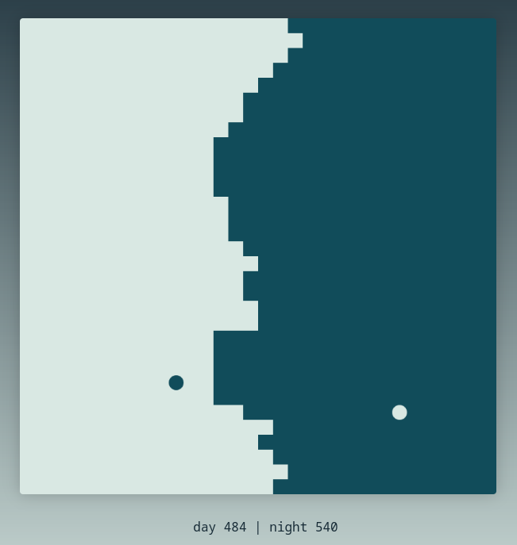
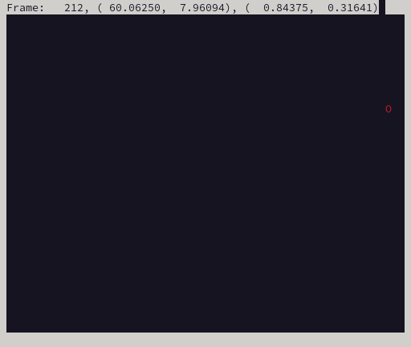

I'm trying to write an improved version of Pong Wars for the NABU as a project to become familiar with NABU programming. Then maybe I can do a fancy Miniputt golf game.

Pong Wars is a game with a board of width by height squares and two balls of different colours (black and white usually). Conveniently, the NABU video display is 32 "characters" wide by 24 rows tall, and if we use a square rather than a letter in the font, that can be our board. It's also easily controlled in that mode (rather than fiddling with pixels and VDP bandwidth limits) and we can do the balls as sprites.
The balls move, controlled by inertia until they hit a square of a colour that doesn't match the ball's colour. In that case, the square changes to the ball's colour and the ball's trajectory reflects (bounces) off the square. The balls also bounce off the walls as you would expect.
I'd like to add a ball on ball collision explosion to the game, as they sometimes get stuck when near each other under the standard rules. Also, user input via joystick to accelerate the balls in a selected direction (other games added paddles but that seems less fun, and for precision really needs paddle controls rather than joysticks). And sound effects. And up to 8 balls (thus the N in the title, for N up to 8 :-). And network play with other versions of the program, possibly running on different types of computer.
After spending an hour last week investigating emulating the NABU personal computer in hopes of writing something for it, I've decided to keep notes in this blog. So that I can remember what happened, and other people can start NABU development too.
First of course, I was reading some online web site documentation. Of note are:
Then I spent some time reading the source code of the various implementations of Pong Wars from the list on Github. The bugs and feature requests list for Koen's version also suggest a few ideas and improvements. Odd that they all iterate over the whole array of squares to draw the screen repeatedly, rather than just doing changed squares. A sign of having too much CPU power!
I'm using Fedora 39 Linux. Fortunately a lot of the needed tools have already been packaged.
So to install MAME (an emulator which handles the NABU, currently version
0.262):
dnf install mame mame-data-software-lists mame-doc mame-tools
And for the C compiler and assembler:
dnf install z88dk
(actually, that doesn't work, no NABU subsystem, see later on for a source code
based install)
For the NABU Network Adapter server (simulates the NABU network distributing files to NABU computers), I'm starting with the one from Nabu.ca:
And that's as far as I have gotten. Hope to run MAME next and see the stock NABU boot screen.
I started MAME setup by copying some of the files from GTAMPs "nabu-mame.zip" for Windows into a new MAME directory in my user account. I was looking for configuration and other similar files, which weren't specific to the Windows OS MAME that the .zip file includes. I also converted the nabu.cmd batch file into a NabuStart.sh bash script file.
Boots, but doesn't run the network - RetroNet adapter says it got FF rather than some start sequence. Later on I found it was due to a low baud rate setting on the simulated serial port that the NABU talks to the NABU network adapter.
Add "nabu" user and group.
useradd --create-home --comment "NABU Network Server" nabu
Add to dialout group, in case we ever have a real serial port.
gpasswd --add nabu dialout
Add a password.
passwd nabu
Log in as nabu user. Get the source code:
git clone https://github.com/thorpej/nabud.git
Then run "./configure", "make", and as root "make install" in the nabud
directory.
After all that, "man nabud" should give you the documentation, and there's a README on the GitHub page. https://github.com/thorpej/nabud
Install Linux systemd settings for nabud by doing:
cp -v /usr/local/share/nabud/systemd/nabud.service /etc/systemd/system/
Put a configuration file nabud.conf in /usr/local/etc/nabud.conf (trimmed down
from one of the examples).
Then you can "systemctl status nabud", and use the enable and stop/restart
commands as desired.
Then I tried it again, and get "Got unexpected message 0xff". Same problem as with Nabu.ca Network Adapter. Maybe MAME needs a newer version or different ROMS or settings (actually was serial port speed).
Known working config for MAME found in https://forums.nabu.ca/viewtopic.php?t=17.
ROMs in the Quiver at Nabu.ca are the same as in the GTAMPs "nabu-mame.zip" But there's a mention in the Nabu.ca forums that ROM version 14 is a hacked up version, possibly adding to the communication protocols? Discussion found at https://forums.nabu.ca/viewtopic.php?p=951. Turns out to be the same as the GTAMP nabupc-u53-ver14-2732.bin file.
Noticed that in the other .cmd files from GTAMP, some start MAME with a
-bios ver14 argument, or ver17.
From a post on the Vintage Computer Federation https://forum.vcfed.org/index.php?threads/nabu-pc-emulation-under-mame.1241092/page-16 they mentioned setting the baud rate in the emulator to 111900, and that the Scroll Lock key followed by Tab can bring up the MAME menu when running (so that you can change the serial port speed). Mine was at 9600 baud. And of course there's no scroll lock key on my laptop keyboard, so I had to dig up a USB keyboard just to press that button.
How about the other serial port settings? https://forums.bannister.org/ubbthreads.php?ubb=showflat&Number=122002 says 111900 baud in both directions, 8 bits, no parity, 1 stop bit, no flow control. Still didn't work.
I wiped out my MAME directory and restored it from GTAMP's .zip file. MAME complained about not finding a keyboard rom; I just had to move the nabukeyboard*.bin files out from the roms/nabu_kb directory into roms/nabupc. MAME stopped complaining about missing ROMs and it started working! Using the -bios option to pick a rom was apparently causing problems, I just needed to use the defaults. Argh!
This command line works (after you get to the MAME menu via the scroll-lock
and tab key, and fix the serial port settings, and have one of the Nabu Network
simulators running in the background on TCP port 5816). By the way, you can
make the window dimensions larger or smaller as you wish for readability:
mame nabupc -window -resolution 1024x768 -hcca null_modem -bitb socket.127.0.0.1:5816
It even worked with both Network Adapter simulators, nabud and the Nabu.ca NABU Internet Adapter.
Next up, try compiling an example program and get it running.
After a bit of reading and then trying out CP/M (manual and reference card PDFs exist) in a simulated NABU computer running in MAME, I'm ready to start programming. I'm looking at https://github.com/DJSures/NABU-LIB which documents how to set up a development environment and how to compile programs for the NABU. Looks like the best way to run the game is under CP/M, rather than on bare hardware. That way you can save games to disk, there's library code for running the hardware (text, graphics, sound, joysticks, serial data, interrupts, disk access, network access). Hopefully that will make it easier to get started with writing the game.
Try to get the compiler working. Of course, it doesn't, get warnings about #warning statements in the library's header file. Hours of frustration ensue.
Try a Hello World simple C program. Can't find zpragma command. Try again, with zcc environment variables set to /usr/share/z88dk/... can't find nabu.cfg. But can find cpm.cfg. Look at arguments, turn off "-vn" which hides what zcc is doing!
cp /usr/share/z88dk/lib/config/../..//lib/cpm_crt0.opt /tmp/tmpXXxzT5zg.opt cp /tmp/tmpXXxzT5zg.opt /tmp/tmpXXxzT5zg.asm zcpp -I. -DZ80 -DCPM -D__CPM__ -DZ88DK_USES_SDCC=1 -I/usr/share/z88dk/lib/config/../..//include main.c /tmp/tmpXXFsyuOI.i2 zpragma < /tmp/tmpXXFsyuOI.i2 > /tmp/tmpXXFsyuOI.i sh: line 1: zpragma: command not found
Looks like it does really need a zpragma command, and none exists.
Deinstall ZCC with dnf remove z88dk and then download the source
and build zcc and sdcc. Instructions at
https://github.com/z88dk/z88dk/wiki/installation.
I just did a home directory install (not a system-wide install) of the
March 3 2024 version (plenty of older versions are around and there's a
Git repository too for easier reversions, might want to use 2.3 from 20.12.2023
which was before a SDCC compiler change, though I see a NABU change in
February 2024).
git clone --recursive https://github.com/z88dk/z88dk.git
dnf install gcc g++ gdb make bison flex libxml2-devel subversion zlib-devel m4
ragel re2c dos2unix texinfo texi2html curl perl cpanminus ccache boost
boost-devel boost-graph perl-Modern-Perl perl-YAML-LibYAML perl-local-lib
perl-Capture-Tiny perl-Path-Tiny perl-Text-Table perl-Data-HexDump
perl-Regexp-Common perl-Clone perl-File-Slurp pkg-config gmp-devel
Then continue on with the rest of the instructions, installing Perl modules, running the build, and adding environment variables to your .bashrc so ZCC is runnable. Finally do their test compile and try a NABU CP/M Hello World.
The tools to make a hard drive disk image for remote access are Windows versions, so instead copy the .COM file to NABU Internet Adapter/Store/D/0 and see if it shows up in Cloud CP/M on drive D user 0. Need to use the "CPMDRIVE B" command within the NABU emulation, then it appears.
Yay! After 4 hours, got my Hello world test working. Whew. That's enough for today. Next, try compiling NABU hardware library stuff and see if the example games work.
I tried compiling Brick Battle, but lots of errors appear in the NABU-LIB code; you see this many times:
main.c:742: warning 283: function declarator with no prototype
main.c:855: error: syntax error
^---- ld ( 0xff00 ), hl
^---- ldh(0),hl
The forums https://forums.nabu.ca/viewtopic.php?t=207 say something broke in Z88DK in May 2023. A hint: the left over listings of working code examples in NABU-LIB use version 4.2 of the SDCC compiler.
So first try compiling z88dk release 2.3 (December 20 2023), from this particular commit: https://github.com/z88dk/z88dk/commit/51889e53005df1258e1a437bc68e6c4f33b63786 and see what version of the compiler it has. 4.3.0 is the version, too new, and it doesn't work just as before.
Go back in Git history and get Z88DK from May. Actually, it looks like the
switch to SDCC 4.3.0 was done on February 6 2023, so try the change just before
it, from February 3rd git checkout -b NABU-LIB-Compatible
--recurse-submodules 492cb971987d88f91d2b046ce99d5bd34f6fadea. The
build process fetches http://nightly.z88dk.org/zsdcc/zsdcc_r13131_src.tar.gz
(hmmm, actual version number is slightly earlier). And when compiled, it
compiles without silly errors! The listing says:
Version 4.2.0 #13081 (Linux)
Now does it run? I see that it loads the title screen picture off the Nabu.ca network (it's in a subdirectory too). And music is included as compiled data. Yay! Music and title screen. Plays with sound effects and everything in MAME, and exits nicely to CP/M too. Okay, we're finally in business after yet another long afternoon trying to get the build system working. Whew!
Shortcut to build the right version of Z88DK in one shot (after installing
the software the builder needs) under Linux:
git clone https://github.com/z88dk/z88dk.git ; cd z88dk ; git checkout -b NABU-LIB-Compatible 492cb971987d88f91d2b046ce99d5bd34f6fadea ; git submodule update --init --recursive ; export BUILD_SDCC=1 ; export BUILD_SDCC_HTTP=1 ; ./build.sh ; cd ..
Look at the later NABU bug fix in 2859b2b64b5797f2eb4bf944785423a801b40e0c, but that seems to use a whole mostly new runtime system to do graphics, paddles, vt-100 terminal emulation etc, overlapping with NABU-LIB quite a lot. So either use the old Z88DK and NABU-LIB or use the newer Z88DK runtime without NABU-LIB.
Compile Brick Battle, read the game code, look at compiler output (array access gets simpler if player array structures are 8 bytes rather than 5 bytes), hack it up a bit.
Read source code for NABU-LIB and see what functionality it provides:
Continue reading NABU-LIB.h at line 344, VDP Variables.
Continue reading NABU-LIB.h at line 1077, VDP functions. Finished .h, and then read NABU-LIB.c, with a side trip to check out how RetroNET-FileStore.* works (writes and reads codes over the HCCA serial port to the server to open files, etc, on the server and use a handle number to refer to them on the NABU). Overall, several copy and paste documentation errors, works as expected and not super optimised so it's understandable.
Want to look at the zcc compiler NABU support. Start by getting latest zcc source and compiling the compiler. It uses zsdcc_r14648_src.tar.gz for the underlying compiler. Then search for files with "nabu" in them. See z88dk/include/arch/nabu.h and directory z88dk/include/arch/nabu/.
So, best bet for portability and future compilation is to use Z88DK NABU support and the newer compiler. But keep an eye on NABU-LIB for useful code.
Next up - game design. What do I want in the game?
Possible ways of implementing the game design.
Yet more game design, and code design, they're kind of a continuum of design and not really separate. Stealing lots of ideas, and coming up with a few new variations.
Wonder how well you can do 16 bit fixed point integers on the Z80, what does the generated code look like?
Write some test code, we have a 6 bit fraction and 10 bit integer part, adding works by just using signed 16 bit integers, but we need to divide by 64 to get the integer portion.
Continue with fixed point speed tests, trying to get the compiler to not optimise everything out by putting the code in a subroutine with arguments, rather than in-line with constants.
Ugh, divide a 16 bit integer by 64 is sra d; rr e; repeated 6
times, totalling 24 bytes of opcodes. Floating point is even worse, with lots
of code to just put the 4 byte arguments on the stack to set up a library call.
Comparing against 2 byte integers, it looks like 4 byte integers take twice as long, and 4 byte floating point numbers take 8 times longer. Since it's kind of non-standard to use 16 bit fixed point other than 8.8 bits (we want 10.6 for pixel coordinates), 32 bit integers in a 16.16 fixed point format would be safer and easier for the computer to shift to get the integer or fraction portion. 32 bit integers will give us enough numeric range and be well supported on all computers.
But how fast is math on the Z80? 2 seconds for 50000 calls to a subroutine that adds two 16 bit ints, 4 seconds for 32 bit ints, 15 seconds for 32 bit floats. Yes, there is some loop and subroutine call overhead, but that's close enough for estimates.
So, how much math do we need? Most is collision detection, finding the tiles inside a circle around a ball. The biggest ball is 32 pixels in diameter, so 4x4 tiles or 16 tiles (well, maybe 5x5 for half tiles around the edge). Distance from a tile to ball would be an (X, Y) vector, so 2 subtractions to calculate it. Can use a table to go from X (varies from 0 to ball radius plus tile radius = 20) to X squared (whew, expensive multiplication avoided), one more addition to add X^2 + Y^2 to get distance squared (avoid doing square root, work with squared pixel length) and a subtraction to do the comparison (draw tiles as circles to match the math and look better - in-joke: have a spherical cow Easter egg). So 4 add/subtracts per tile, 16 times, totalling 64 additions per ball. 4 balls, so 256 additions. 60 frames per second, so 15360 additions per second just for tile collisions. And we can do 25000 additions per second for 16 bit math, or 12500 for 32 bit integers. Looks like we should use 16 bit integers to be safe, or use 32 and run at 30 frames per second.
So start with 32 bit fixed point math and allow for the possibility of rewriting as 16 bit if we don't have enough speed.
Looked at ncurses, seems like it could show the tile field quite easily for Linux and BeOS in terminal mode, since it renders an array of characters to a screen. Also has support for menus and windows. Should be easier to debug in a terminal in a modern OS rather than on a NABU screen. Nobody uses ncurses on Z88DK since the library is several kilobytes large.
Spent a while trying to get ncurses to do anything, turns out you need to read a character else it doesn't draw anything (or it draws and erases it too quickly to see it). Also, can do colour, which will be good for the game!
Code just a ball bouncing off the walls, to get started. Uses ncurses for output, keyboard for input, should compile in Linux and then BeOS.
Yeah! It works. The 16.16 bit fixed point math seems to work correctly, and I got ncurses running in real time (specified as 20 frames per second) and in colour.

You can also see the source code in C for this version.
Next up, design the main data structures for the balls and tiles. And algorithms for evenly advancing positions of multiple balls moving faster than one tile per frame. Hmmm, might also need a sorted tree of tile updates to find runs of changes for faster NABU VDP video chip writes and better network data compression.
- Alex
Copyright © 2024 by Alexander G. M. Smith.